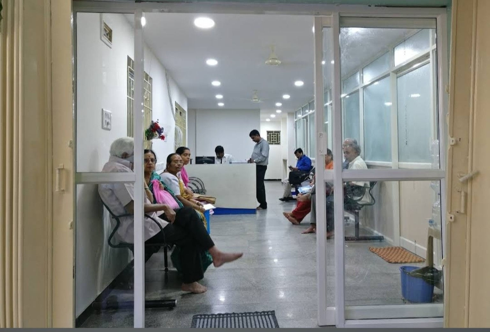
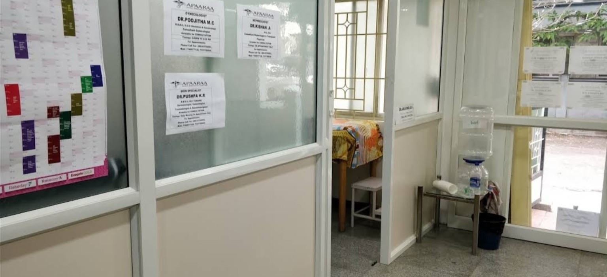
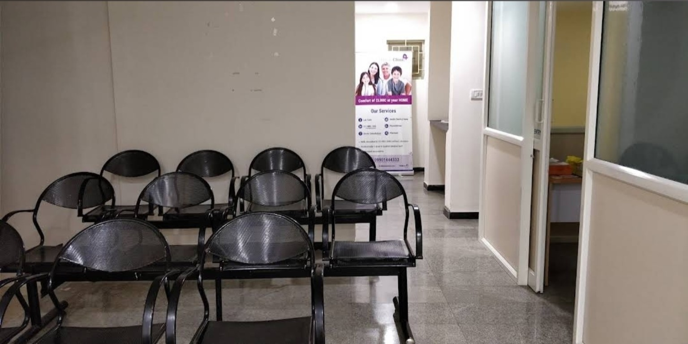
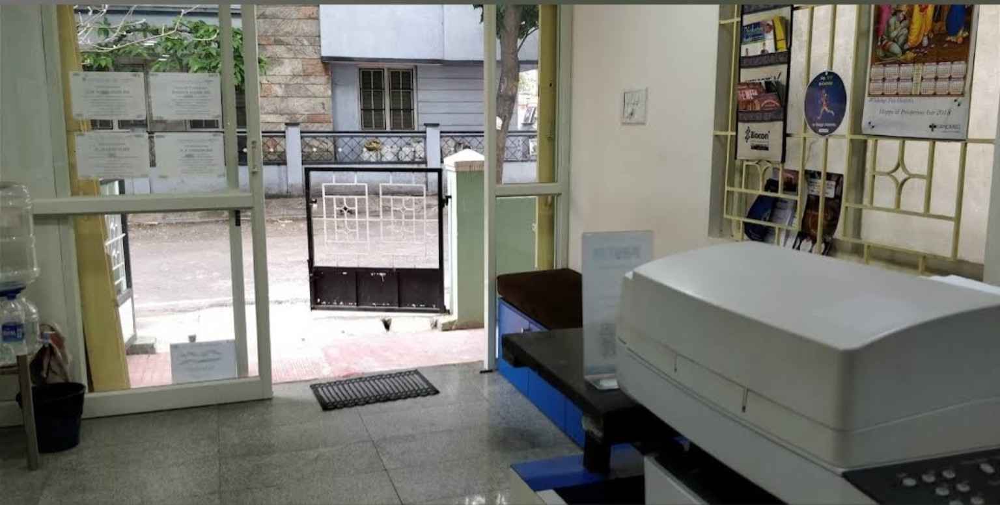
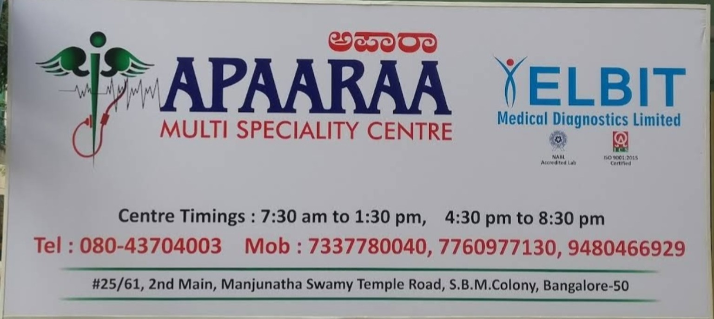

01
Gynaecology
Consultation with the listed gynaecologist for women’s health concerns and guidance.
Listed specialistDr. Poojitha M.C.
↗APAARAAA Multi Speciality Centre / Banashankari, Bengaluru
Call the centreA neighbourhood multi speciality centre in Banashankari, bringing specialist consultations and a clear next step for your visit into one place.

Specialist care, with a simpler first step.
When you need medical attention, it helps to know where to start. APAARAAA Multi Speciality Centre brings listed specialist consultations together at its Banashankari location, with clear contact details and clinic hours to help you plan ahead.
Use the specialist list below to find the right starting point, then call the centre to confirm timings and availability.
These are the specialist services and doctors shown on the centre’s supplied signage. Please call to confirm current consultation schedules.
Consultation with the listed gynaecologist for women’s health concerns and guidance.
Specialist consultation for bone, joint and movement-related concerns.
Consultation with the listed skin specialist for concerns affecting skin health.
Looking for another speciality? Call the centre to ask about the current doctor schedule and available consultations before travelling.
Call 94804 66929 ↗
The centre’s displayed specialist list includes the doctors below. Consultation days and availability may vary, so a quick call before your visit is the best way to plan.
Confirm a specialist’s schedule ↗The centre signage also displays ELBIT Medical Diagnostics Limited. Call ahead to confirm the specific investigation, availability and timing before your visit.
Keep your visit straightforward with a few simple steps before you leave home.
Ask about the doctor you need, consultation timing and whether an appointment is required.
Keep relevant previous prescriptions, investigation reports and a list of current medicines handy.
Open the location link before starting out and allow time to find the centre.
A few glimpses of the centre, from the waiting area to the consultation spaces.



Before you visit, call to confirm the doctor’s schedule and the timing that works for you.
Contact the centre ↗A selection of Google review excerpts supplied for this website. Individual experiences are personal and results can vary.
View location on Google Maps ↗“I visited Dr Aravind g n sir after visiting a corporate hospital for severe pain in my jaw and legs and thighs. After going through the investigation reports he made the right diagnosis and prescribed me the right medicine and saved me from a potential bigger problem. All this he has treated me with a human touch because of his passion for his profession.”
“Very best Doctor. Best treatment given for my mom.”
“Dr Arvind is best.”
“Good adviser. Good doctor.”
“Worth place. With multi-speciality treatment. Please note prior appointment is mandatory.”
Confirm the right specialist, consultation timings and appointment requirements before you travel.
Call ahead to check current doctor availability.
Use the address and map link to plan your route. The centre’s sign lists Manjunatha Swamy Temple Road as a local reference.
There’s a midday break between the morning and evening sessions on most days.
Quick answers to help you prepare for a visit.
Yes. Calling ahead helps confirm the doctor’s availability, consultation timings and whether an appointment is required.
The supplied centre signage lists Dr. Poojitha M.C. (Gynaecologist), Dr. Kishan A. (Orthopaedist) and Dr. Pushpa K.R. (Skin Specialist). Confirm current schedules by phone.
Bring relevant previous reports, prescriptions, a list of medicines you take and any documents related to your current concern.
The supplied listing shows Sunday morning hours from 7:30 AM to 1:30 PM. Call to verify before visiting, especially on holidays.